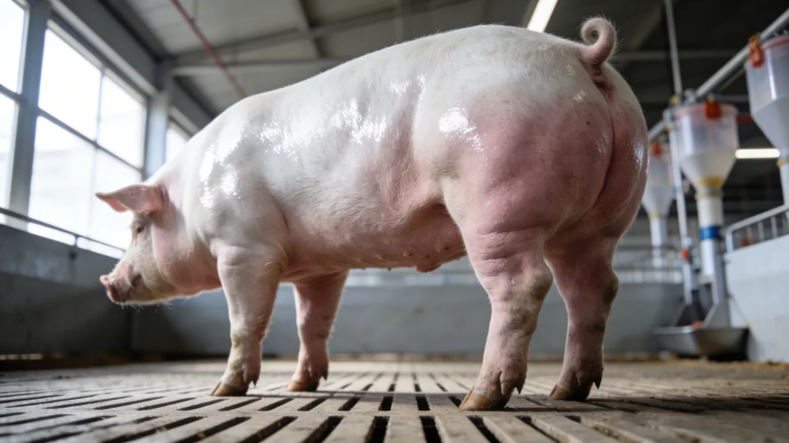
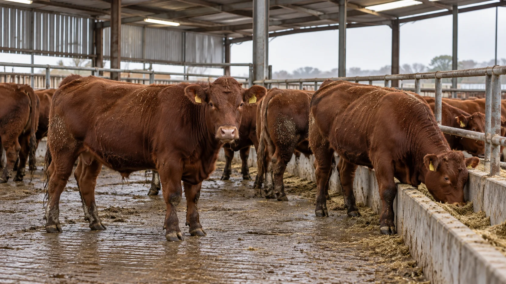
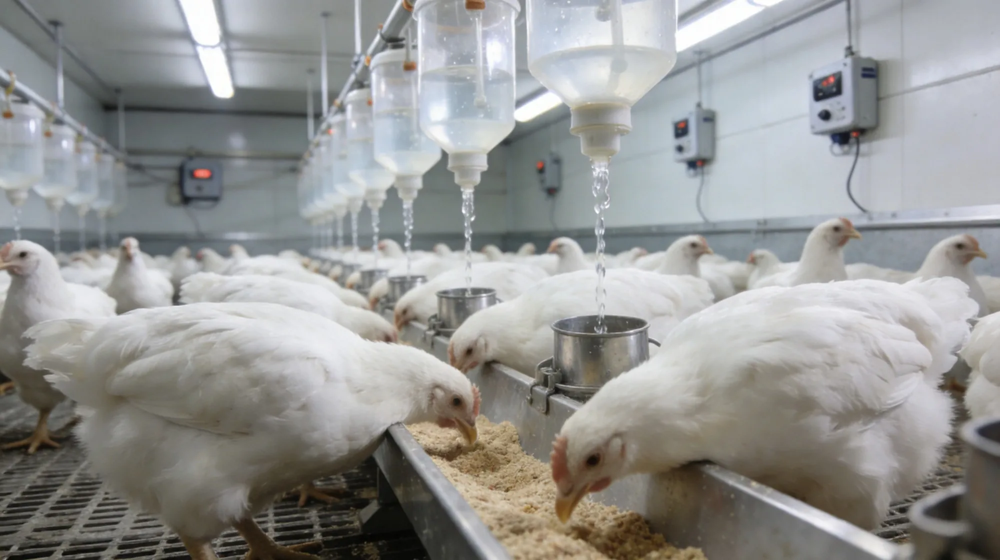
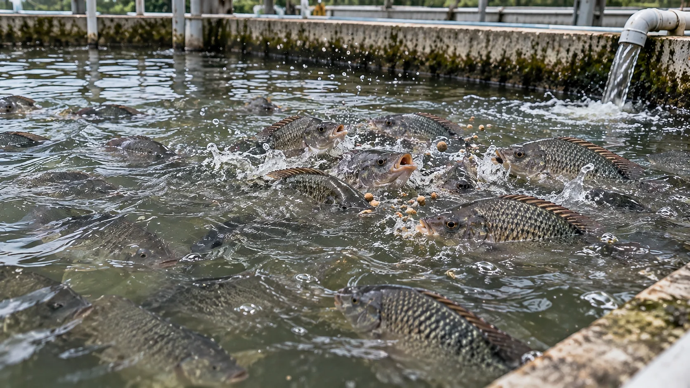
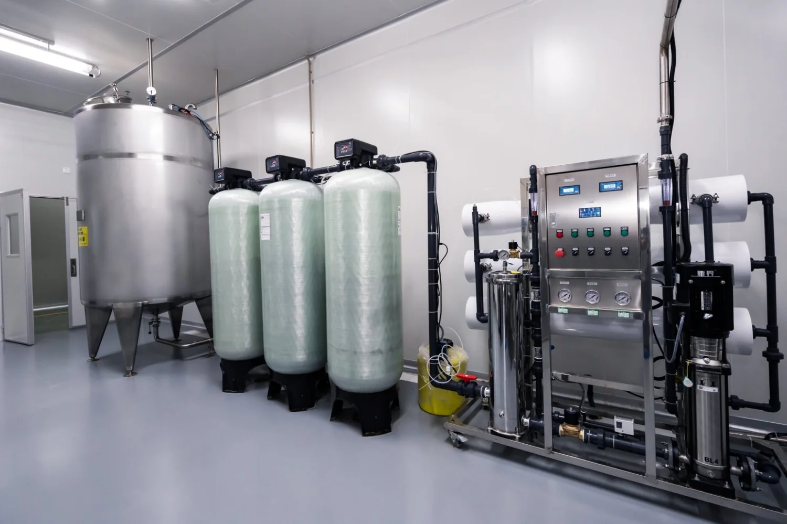
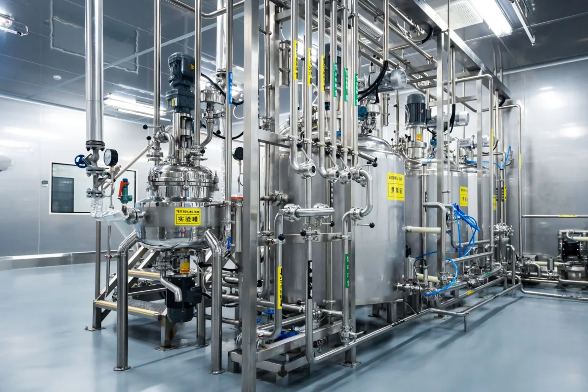
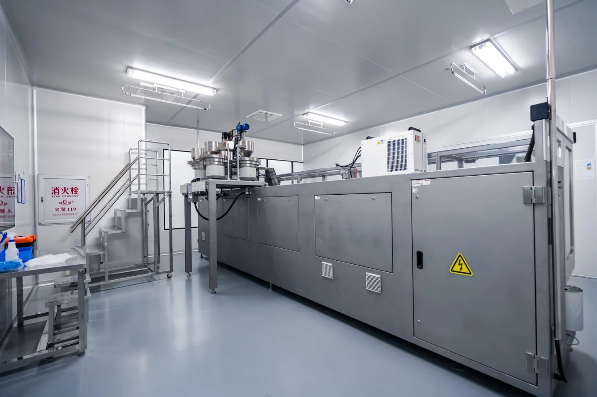

给养殖户看的产品与收益账
先看前后差异
再算每批回报
活力得® 生物可利用硅源复合功能材料
聚焦繁殖、生长与育成的实际经营指标；把自家基线、预期增收与产品成本放进来，先算清楚再决定。
常见经营指标｜前 → 后参考
先看差异，再用自家数据核算。
母猪｜PSY
21→>28
头／母猪／年
育肥猪｜背膘厚度
26.4→15.3
mm；场域参考
水产｜育成率
60%→80%
百分比；产业参考
场域／产业参考值不等于收益承诺；实际差异受物种、日粮、管理与场况影响。
先把自家数据带进来
每批到底能不能赚？
填入你估算的每头增收／节省、产品投入成本和本批头数，即时计算盈亏平衡点与整批净收益。金额输入以 CNY 为基准。
每头预计净收益— CNY
整批预计净收益— CNY
投入成本回报率 ROI—
每头产品成本盈亏平衡上限— CNY
估算公式：（每头增收＋节省－每头产品成本）×头数。ROI＝每头净收益 ÷ 每头产品成本。这是按你输入数据的情境试算，不代表保证结果；试用前建议记录同场基线、使用成本与出栏／繁殖数据。
填入三项自家数据即可试算，数据不会上传。
按你的经营痛点选应用线
先对照繁殖、生长、育成指标，再进入对应页面查看产品信息与场域参考
 繁殖线
繁殖线
生长线
反刍线
家禽线
水产线
农业线
产品原理
市场与供应常见问题（FAQ）
活力得®是什么？
活力得®是生物可利用硅源（胆碱稳定原硅酸）与重组C-谱系丝氨酸蛋白酶构成的单一复合功能材料，同时支持软组织利用与硬组织利用。
适用哪些物种？
涵盖六大物种繁殖与生长线：母猪、育肥猪、反刍牛羊、家禽、水产与农业作物。
软组织利用与硬组织利用分别是什么？
软组织利用由重组C-谱系丝氨酸蛋白酶提供氨基酸原料；硬组织利用由胆碱稳定原硅酸支持胶原合成与矿化。